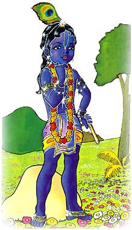

For a moment, Gopal felt very sad. His friends were lying in the belly of that great serpent! How will I help them? Then Krishna entered Agha’s mouth. All the celestial beings hiding in the clouds were worried. They cried out: “Alas! Alas!”